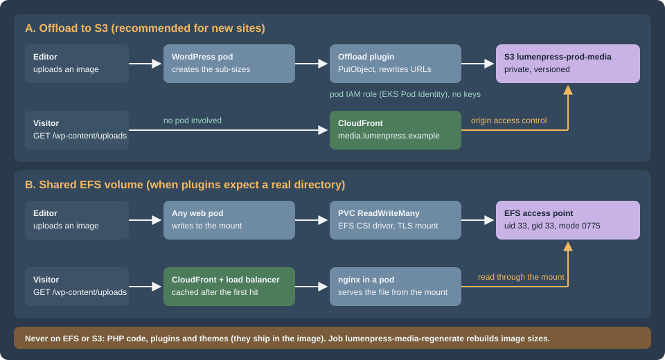

Media: S3 Offload, EFS and CloudFront
|
This content was generated with the assistance of AI and should be verified against the official documentation before being relied on in production. |
This page was written against WordPress 7.1.3 (released 2026-10-06; 7.1.4, the security release of 2026-10-28, is the
version to run), PHP 8.4, WP-CLI 2.12.0, Kubernetes 1.36 and 1.37, the Amazon EFS CSI driver 3.5.3, OpenTofu 1.12 with the AWS
provider 6.x and WP Offload Media Lite 3.4.4 (listed as tested up to WordPress 7.1.4 and requiring PHP 8.1), and checked on 2026-10-29. Listings were
validated with tofu validate -backend=false, kubeconform -strict, php -l, nginx -t and shellcheck; the nginx
rules were also run against a container. Nothing was created in an AWS account, so the offload plugin was not run against
S3 and the settings in the plugin section are those of its documentation.
The media library is the largest piece of state that WordPress keeps on disk, and the one that most obviously breaks a cluster: an image uploaded through one pod must be visible from every other pod, survive the pod’s replacement, and be fast to serve. This page is for administrators and platform engineers moving Lumen Press from one server to the cluster described in the Cloud Reference Architecture. It covers the two designs that work, the CDN in front of them, how to move the existing library and how to rebuild image sizes. The general rule that uploads must be shared is in Scaling and High Availability; the S3, EFS and CloudFront services themselves are in Amazon S3, block and file storage and CloudFront.

What writes to the uploads directory
wp-content/uploads is not only the Media Library. On a real site, these write there:
-
The upload itself, in
YYYY/MM/folders, plus every sub-size that the theme registers (thumbnail, medium, large and the theme’s own), generated by the image editor (Imagick or GD) at upload time. Edits in the image editor add more files. -
Plugins that generate files: page-builder CSS, form-plugin attachments and exports, SEO sitemaps in some plugins, caching and minifying plugins, backup plugins and WooCommerce’s protected
woocommerce_uploadsfolder for downloadable products. -
Imports, such as
wp importand plugin-driven bulk uploads.
On one server all of these land on one disk. On a cluster, a pod’s own disk is thrown away when the pod is replaced, and another pod does not see it. There are three ways to give every pod the same view:
| Offload plugin and S3 | Shared EFS volume | |
|---|---|---|
How it works |
A plugin hooks the upload, copies the files to an S3 bucket, and rewrites attachment URLs to a CDN host. The pods keep only scratch space |
Every pod mounts the same network file system at |
WordPress changes |
A plugin and its settings in |
None. The directory just happens to be network storage |
Serving files |
CloudFront reads from the private bucket; no pod is involved |
nginx in a pod reads from the mount; CloudFront caches in front |
Performance |
Fast and cacheable; no filesystem latency on the request path |
Each uncached read is a network file system read; it is fine behind a CDN |
Plugins that expect a local directory |
Break unless the plugin copies the files back or they are changed |
Work as they did |
Failure mode |
A bucket policy or role error: uploads fail or links break |
Mount target or throughput problems: slow or hung requests |
Fit |
New sites, large libraries, high traffic |
Sites with plugins that read and write files by path; a first step on a short timeline |
A fourth option, mounting the bucket as a file system with a FUSE tool, is common in older guides and is not recommended: S3 is an object store without the rename, append and locking behavior that WordPress and its plugins assume, and a mount that hangs hangs the PHP workers with it. Block storage (EBS) is not an option either; a volume attaches to one node in one zone, so it cannot be shared by pods in several zones.
The default for the Lumen Press cluster is the offload plugin and S3 behind CloudFront, with EFS as the fallback for the plugins that need a directory.
Option A: offload to S3
How an offload plugin works
WordPress has no built-in remote media storage. An offload plugin uses core hooks: it filters upload_dir, runs after
wp_generate_attachment_metadata and wp_update_attachment_metadata to copy the original and each sub-size, filters
wp_get_attachment_url and the image srcset output to produce CDN URLs, and removes the object when the attachment is deleted. It records
what it did in post meta, so it knows which attachments are offloaded.
WP Offload Media Lite is the best known. The wordpress.org page described it, on the check date, as copying files uploaded through the media uploader to Amazon S3, DigitalOcean Spaces or Google Cloud Storage, rewriting URLs to the bucket or a CDN, and optionally removing the local copies. It listed three limits of the Lite version: only new uploads are offloaded, existing media is not moved automatically, and files go to the server first before the plugin copies them. Uploading the existing library and managing offloaded files from the Media Library are Pro features. Other offload plugins exist (Media Cloud is one); evaluate each against the checklist below, which is what decides whether a plugin is acceptable on a cluster.
A plugin is acceptable for a cluster when:
-
it offloads every sub-size, and the files created by image-editor edits, and removes them when the attachment is deleted;
-
its settings can be fixed in code (a constant), so that all pods behave alike and nobody changes them in a dashboard that only one pod’s request touches;
-
it uses the pod’s IAM role through the AWS SDK’s default credential chain and does not need long-lived access keys in
wp-config.php; -
it works with a bucket that blocks public access and has ACLs disabled (the default for new buckets);
-
it can be configured with a delivery domain, so URLs point at CloudFront and not at the bucket;
-
its behavior is clear when the upload to S3 fails, because the file is still on the pod’s scratch disk and the request must not report success.
The scratch directory
A pod still writes to wp-content/uploads: WordPress stores the original, runs the image editor on it and writes the
sub-sizes there, and only afterwards does the plugin copy them to S3. With a read-only root file system the directory must be a writable volume;
an emptyDir with a size limit does it, and the plugin setting remove-local-file deletes each file after
the copy. The files in that directory are not the library: they are in flight, and the pod can disappear without loss
once the request has finished. The mount in the Deployment:
apiVersion: apps/v1
kind: Deployment
metadata:
name: lumenpress-web
namespace: lumenpress
spec:
replicas: 3
selector:
matchLabels:
app.kubernetes.io/name: lumenpress-wordpress
app.kubernetes.io/component: web
template:
metadata:
labels:
app.kubernetes.io/name: lumenpress-wordpress
app.kubernetes.io/component: web
spec:
serviceAccountName: lumenpress-wordpress
securityContext:
runAsNonRoot: true
runAsUser: 33
runAsGroup: 33
containers:
- name: php-fpm
image: 123456789012.dkr.ecr.eu-west-1.amazonaws.com/lumenpress/wordpress:<git-sha>
securityContext:
readOnlyRootFilesystem: true
allowPrivilegeEscalation: false
volumeMounts:
- name: uploads-scratch
mountPath: /var/www/html/wp-content/uploads
- name: tmp
mountPath: /tmp
volumes:
# WordPress writes the original and the sub-sizes here before the plugin copies them to S3.
- name: uploads-scratch
emptyDir:
sizeLimit: 2Gi
- name: tmp
emptyDir: {}The Deployment is a fragment of the one built in Deploying on EKS with Helm;
the full chart has the nginx container, probes and the rest. The service account lumenpress-wordpress is the one that
gets the bucket role in the next listing. A sizeLimit evicts the pod when a runaway import fills it, which is better than filling the node.
Choose the limit from the largest upload the site accepts, times the number of sub-sizes, times the concurrent uploads per pod.
The bucket, CloudFront and the pod role
The listing creates the private bucket, an origin access control, a CloudFront distribution for media.lumenpress.example
with a long cache lifetime, the bucket policy that lets only that distribution read, and an IAM role for the pods that
can write under the uploads prefix, bound to the service account with EKS Pod Identity. It is the media extract of the infrastructure
in EKS Infrastructure with OpenTofu; the ACM certificate must be in
us-east-1, as CloudFront requires, and the DNS record is a Route 53 alias to the distribution (see
Route 53 and Certificates).
terraform {
required_version = ">= 1.8"
required_providers {
aws = {
source = "hashicorp/aws"
version = "~> 6.0"
}
}
}
provider "aws" {
region = "eu-west-1"
}
variable "certificate_arn" {
description = "ACM certificate in us-east-1 for media.lumenpress.example."
type = string
}
resource "aws_s3_bucket" "media" {
bucket = "lumenpress-prod-media"
}
resource "aws_s3_bucket_public_access_block" "media" {
bucket = aws_s3_bucket.media.id
block_public_acls = true
block_public_policy = true
ignore_public_acls = true
restrict_public_buckets = true
}
resource "aws_s3_bucket_ownership_controls" "media" {
bucket = aws_s3_bucket.media.id
rule {
object_ownership = "BucketOwnerEnforced"
}
}
resource "aws_s3_bucket_versioning" "media" {
bucket = aws_s3_bucket.media.id
versioning_configuration {
status = "Enabled"
}
}
resource "aws_s3_bucket_server_side_encryption_configuration" "media" {
bucket = aws_s3_bucket.media.id
rule {
apply_server_side_encryption_by_default {
sse_algorithm = "AES256"
}
}
}
resource "aws_s3_bucket_lifecycle_configuration" "media" {
bucket = aws_s3_bucket.media.id
rule {
id = "expire-noncurrent-versions"
status = "Enabled"
filter {}
noncurrent_version_expiration {
noncurrent_days = 30
}
abort_incomplete_multipart_upload {
days_after_initiation = 7
}
}
}
resource "aws_cloudfront_origin_access_control" "media" {
name = "lumenpress-prod-media"
origin_access_control_origin_type = "s3"
signing_behavior = "always"
signing_protocol = "sigv4"
}
data "aws_cloudfront_cache_policy" "optimized" {
name = "Managed-CachingOptimized"
}
resource "aws_cloudfront_response_headers_policy" "media" {
name = "lumenpress-media"
custom_headers_config {
items {
header = "Cache-Control"
value = "public, max-age=31536000, immutable"
override = false
}
}
}
resource "aws_cloudfront_distribution" "media" {
enabled = true
is_ipv6_enabled = true
aliases = ["media.lumenpress.example"]
comment = "Lumen Press: offloaded uploads"
origin {
origin_id = "media"
domain_name = aws_s3_bucket.media.bucket_regional_domain_name
origin_access_control_id = aws_cloudfront_origin_access_control.media.id
}
default_cache_behavior {
target_origin_id = "media"
viewer_protocol_policy = "redirect-to-https"
allowed_methods = ["GET", "HEAD", "OPTIONS"]
cached_methods = ["GET", "HEAD"]
cache_policy_id = data.aws_cloudfront_cache_policy.optimized.id
response_headers_policy_id = aws_cloudfront_response_headers_policy.media.id
compress = true
}
restrictions {
geo_restriction {
restriction_type = "none"
}
}
viewer_certificate {
acm_certificate_arn = var.certificate_arn
ssl_support_method = "sni-only"
minimum_protocol_version = "TLSv1.2_2021"
}
}
data "aws_iam_policy_document" "media_bucket" {
statement {
sid = "AllowCloudFrontRead"
actions = ["s3:GetObject"]
resources = ["${aws_s3_bucket.media.arn}/*"]
principals {
type = "Service"
identifiers = ["cloudfront.amazonaws.com"]
}
condition {
test = "StringEquals"
variable = "AWS:SourceArn"
values = [aws_cloudfront_distribution.media.arn]
}
}
}
resource "aws_s3_bucket_policy" "media" {
bucket = aws_s3_bucket.media.id
policy = data.aws_iam_policy_document.media_bucket.json
}
data "aws_iam_policy_document" "pod_trust" {
statement {
actions = ["sts:AssumeRole", "sts:TagSession"]
principals {
type = "Service"
identifiers = ["pods.eks.amazonaws.com"]
}
}
}
data "aws_iam_policy_document" "offload" {
statement {
sid = "ListBucket"
actions = ["s3:ListBucket", "s3:GetBucketLocation"]
resources = [aws_s3_bucket.media.arn]
}
statement {
sid = "ReadWriteObjects"
actions = ["s3:GetObject", "s3:PutObject", "s3:DeleteObject"]
resources = ["${aws_s3_bucket.media.arn}/wp-content/uploads/*"]
}
}
resource "aws_iam_role" "wordpress_media" {
name = "lumenpress-prod-wordpress-media"
assume_role_policy = data.aws_iam_policy_document.pod_trust.json
}
resource "aws_iam_role_policy" "wordpress_media" {
name = "media-bucket"
role = aws_iam_role.wordpress_media.id
policy = data.aws_iam_policy_document.offload.json
}
resource "aws_eks_pod_identity_association" "wordpress_media" {
cluster_name = "lumenpress-prod"
namespace = "lumenpress"
service_account = "lumenpress-wordpress"
role_arn = aws_iam_role.wordpress_media.arn
}Why each piece is the way it is:
-
Block Public Access and
BucketOwnerEnforced. The bucket is never public, and ACLs are disabled, so every object is owned by the bucket owner. Nobody can make a single object public by accident. The plugin must work with this; check it on staging. -
Origin access control (OAC). CloudFront signs its requests to S3 with SigV4, and the bucket policy accepts only that distribution’s ARN. OAC replaced the older origin access identity; the bucket in an older guide may still use one, and CloudFront covers the migration.
-
The cache policy.
Managed-CachingOptimizedis a managed policy with a long default lifetime. Uploaded files are effectively immutable: WordPress gives every upload a unique name and an edit creates a new file with a suffix, so a long lifetime is safe. The response headers policy addsCache-Controlwithimmutablefor browsers when the object has none. A plugin that overwrites a file in place ("replace media") needs an invalidation of that path. -
Versioning and a lifecycle rule. Versioning protects against deletes and overwrites (a restore is a version restore, see Backups and Disaster Recovery); the lifecycle rule expires old versions after 30 days and aborts stale multipart uploads, which keeps the bucket from growing silently.
-
The pod role.
s3:GetObject,PutObjectandDeleteObjectonwp-content/uploads/*only, and listing of the bucket so the SDK can check keys. A compromised pod can alter media but cannot read other prefixes or change the bucket policy. Pod Identity gives the pod temporary credentials through a container credentials endpoint, with no keys in the cluster; the basics are in EKS Clusters and Identity and Access. A plugin that bundles an old AWS SDK may not support this credential source: on staging, upload an image and confirm in CloudTrail that the object was written by the role of the pods. -
Missing keys return 403. With OAC and no
s3:ListBucketfor CloudFront, a request for an object that does not exist is a403, not a404. Monitor for both.
An alternative that keeps all URLs on the site’s own host serves the uploads path from the main distribution. One distribution has two
origins, the WordPress load balancer and the bucket, and a behavior routes /wp-content/uploads/* to the bucket:
terraform {
required_version = ">= 1.8"
required_providers {
aws = {
source = "hashicorp/aws"
version = "~> 6.0"
}
}
}
provider "aws" {
region = "eu-west-1"
}
variable "origin_domain_name" {
description = "DNS name of the load balancer that serves the WordPress pods."
type = string
default = "origin.lumenpress.example"
}
variable "media_bucket_domain_name" {
type = string
default = "lumenpress-prod-media.s3.eu-west-1.amazonaws.com"
}
variable "media_origin_access_control_id" {
type = string
}
variable "certificate_arn" {
type = string
}
data "aws_cloudfront_cache_policy" "optimized" {
name = "Managed-CachingOptimized"
}
data "aws_cloudfront_cache_policy" "disabled" {
name = "Managed-CachingDisabled"
}
data "aws_cloudfront_origin_request_policy" "all_viewer" {
name = "Managed-AllViewer"
}
resource "aws_cloudfront_distribution" "site" {
enabled = true
is_ipv6_enabled = true
aliases = ["www.lumenpress.example"]
comment = "Lumen Press: WordPress origin, uploads from S3"
origin {
origin_id = "wordpress"
domain_name = var.origin_domain_name
custom_origin_config {
http_port = 80
https_port = 443
origin_protocol_policy = "https-only"
origin_ssl_protocols = ["TLSv1.2"]
}
}
origin {
origin_id = "media"
domain_name = var.media_bucket_domain_name
origin_access_control_id = var.media_origin_access_control_id
}
default_cache_behavior {
target_origin_id = "wordpress"
viewer_protocol_policy = "redirect-to-https"
allowed_methods = ["GET", "HEAD", "OPTIONS", "PUT", "POST", "PATCH", "DELETE"]
cached_methods = ["GET", "HEAD"]
cache_policy_id = data.aws_cloudfront_cache_policy.disabled.id
origin_request_policy_id = data.aws_cloudfront_origin_request_policy.all_viewer.id
compress = true
}
ordered_cache_behavior {
path_pattern = "/wp-content/uploads/*"
target_origin_id = "media"
viewer_protocol_policy = "redirect-to-https"
allowed_methods = ["GET", "HEAD", "OPTIONS"]
cached_methods = ["GET", "HEAD"]
cache_policy_id = data.aws_cloudfront_cache_policy.optimized.id
compress = true
}
restrictions {
geo_restriction {
restriction_type = "none"
}
}
viewer_certificate {
acm_certificate_arn = var.certificate_arn
ssl_support_method = "sni-only"
minimum_protocol_version = "TLSv1.2_2021"
}
}The trade-off is between URLs and isolation. With path routing there is nothing to rewrite in old posts, no CORS and no extra DNS name,
and the offload plugin’s delivery domain is www.lumenpress.example with the object prefix wp-content/uploads/. With a separate media host
the files are served from a cookieless domain with its own cache, WAF rules and logs, the page distribution cannot affect media
caching, and a later move to another CDN is a DNS change. The default behavior of the page distribution above does not
cache the HTML at all; page caching rules are a separate decision, covered in
Performance and Caching.
The plugin settings
WP Offload Media reads its settings from a constant named AS3CF_SETTINGS, a serialized array, so that they are fixed in
code. The listing sets the keys that matter for the cluster; the plugin’s settings-constants page lists the others and which belong to Pro.
<?php
/**
* wp-config.php fragment: WP Offload Media settings fixed in code, so that every pod behaves the same
* and nobody changes them in the dashboard. Credentials come from the pod's IAM role (EKS Pod Identity).
*/
define(
'AS3CF_SETTINGS',
serialize(
array(
'provider' => 'aws',
'use-server-roles' => true,
'bucket' => getenv( 'LUMEN_MEDIA_BUCKET' ) ?: 'lumenpress-prod-media',
'region' => getenv( 'LUMEN_MEDIA_REGION' ) ?: 'eu-west-1',
'copy-to-s3' => true,
'enable-object-prefix' => true,
'object-prefix' => 'wp-content/uploads/',
'object-versioning' => false,
'serve-from-s3' => true,
'enable-delivery-domain' => true,
'delivery-domain' => 'media.lumenpress.example',
'force-https' => true,
'remove-local-file' => true,
)
)
);-
use-server-rolestells the plugin to use the credentials of the environment, here the pod’s role, instead of keys. -
object-prefixofwp-content/uploads/makes the object key equal the path of the file on disk, which is what lets the same bucket be filled with a plain sync, and the old URL still resolve after a host change. -
serve-from-s3anddelivery-domainproducehttps://media.lumenpress.example/wp-content/uploads/...;force-httpskeeps them secure. -
remove-local-filedeletes the scratch copy after the upload. Turn it off only if a plugin reads the files from disk and the pod has the volume for them. -
object-versioningadds a timestamp to the key and is off here, because the bucket is versioned.
The plugin is installed from the image, like any plugin, and activated with WP-CLI in the release process, not from the dashboard. Third-party plugin, constants and behavior change between versions; recheck its documentation on each major update.
Option B: a shared EFS volume
Amazon EFS is a managed NFS file system that many pods in many zones can mount read-write. Kubernetes models it as a
PersistentVolumeClaim with the access mode ReadWriteMany, provisioned by the Amazon EFS CSI driver. Use it when plugins write
files and read them back by path, when an offload plugin cannot be used, or as the first step before the library is moved to S3.
What to set up
-
The file system. Created with OpenTofu with encryption at rest and a mount target in each private subnet (one per Availability Zone), reachable on TCP port 2049 from the node security group. Pick a throughput mode per the EFS documentation; a small file system on bursting throughput can run out of burst credits on a busy site, which shows as slow uploads and slow reads.
-
The driver. Install it as the EKS add-on
aws-efs-csi-driver. Its controller needs an IAM role with the AWS managed policyAmazonEFSCSIDriverPolicy, attached with Pod Identity for the service accountefs-csi-controller-sainkube-system. The driver does not support Windows nodes, and dynamic provisioning is not available on Fargate, where static provisioning is used. Do not installamazon-efs-utilson the nodes yourself. -
A StorageClass and a PVC. Dynamic provisioning with
provisioningMode: efs-apcreates an EFS access point for the claim. An access point is a path in the file system with a fixed POSIX identity: every operation through it runs as that user and group, whatever the pod’s own user is.
apiVersion: storage.k8s.io/v1
kind: StorageClass
metadata:
name: efs-uploads
provisioner: efs.csi.aws.com
parameters:
provisioningMode: efs-ap
fileSystemId: fs-0123456789abcdef0
directoryPerms: "0775"
uid: "33"
gid: "33"
basePath: /lumenpress
subPathPattern: ${.PVC.namespace}/${.PVC.name}
ensureUniqueDirectory: "false"
reclaimPolicy: Retain
volumeBindingMode: Immediate
mountOptions:
- tls
---
apiVersion: v1
kind: PersistentVolumeClaim
metadata:
name: lumenpress-uploads
namespace: lumenpress
spec:
accessModes:
- ReadWriteMany
storageClassName: efs-uploads
resources:
requests:
storage: 5GiThe parameters:
-
uidandgidof33arewww-data, the user of PHP-FPM and nginx in the official Debian-based image. The pod runs as that user too, so ownership matches withoutchownin an init container. Because the access point forces the identity,fsGroupis not needed. -
directoryPermsof0775is the mode of the access point’s root directory when the driver creates it. -
basePathandsubPathPatternchoose the directory in the file system. WithensureUniqueDirectory: "false"the access point is/lumenpress/lumenpress/lumenpress-uploads(the namespace and the claim name) and is stable if the claim is recreated; the default oftrueappends a unique ID, so a recreated claim gets an empty directory. -
reclaimPolicy: Retainkeeps the volume when the claim is deleted, so that a mistakenkubectl delete pvcdoes not remove the library. -
mountOptions: [tls]mounts with encryption in transit. The driver’s own proxy handles TLS. -
The claim’s
storagerequest is a required placeholder: EFS is elastic and does not enforce it.
The Deployment mounts the claim at the uploads path. Only that directory is shared; the rest of the container is the image:
apiVersion: apps/v1
kind: Deployment
metadata:
name: lumenpress-web
namespace: lumenpress
spec:
replicas: 3
selector:
matchLabels:
app.kubernetes.io/name: lumenpress-wordpress
app.kubernetes.io/component: web
template:
metadata:
labels:
app.kubernetes.io/name: lumenpress-wordpress
app.kubernetes.io/component: web
spec:
securityContext:
runAsNonRoot: true
runAsUser: 33
runAsGroup: 33
fsGroup: 33
containers:
- name: php-fpm
image: 123456789012.dkr.ecr.eu-west-1.amazonaws.com/lumenpress/wordpress:<git-sha>
securityContext:
readOnlyRootFilesystem: true
allowPrivilegeEscalation: false
volumeMounts:
- name: uploads
mountPath: /var/www/html/wp-content/uploads
- name: tmp
mountPath: /tmp
volumes:
- name: uploads
persistentVolumeClaim:
claimName: lumenpress-uploads
- name: tmp
emptyDir: {}The test that matters is whether a file written by one pod is read by another. The script writes a marker through the first web pod, reads it from every web pod and removes it:
#!/usr/bin/env bash
# Confirms that uploads are writable on the shared volume and visible from every web pod.
set -euo pipefail
namespace=lumenpress
marker="probe-$(date +%s).txt"
pods=$(kubectl -n "$namespace" get pods -l app.kubernetes.io/component=web -o name)
first=$(echo "$pods" | head -n 1)
kubectl -n "$namespace" exec "$first" -c php-fpm -- sh -c "echo ok > /var/www/html/wp-content/uploads/$marker"
for pod in $pods; do
printf '%s: ' "$pod"
kubectl -n "$namespace" exec "$pod" -c php-fpm -- cat "/var/www/html/wp-content/uploads/$marker"
done
kubectl -n "$namespace" exec "$first" -c php-fpm -- rm "/var/www/html/wp-content/uploads/$marker"NFS semantics apply. EFS gives close-to-open consistency: a file is visible to other clients after the writer closes it, which fits WordPress uploads, but directory listings and attributes can be cached for a short time on a client, so a plugin that polls a directory sees changes with a delay. Every file operation is a network round trip, so a request that reads many small files is slower than on a local disk. Behind CloudFront, each file is read once per cache lifetime.
Serving files from nginx
With EFS, nginx in the pod serves the files. The rule below does two things. It serves uploads with a long lifetime, and it
refuses PHP files in the uploads tree, so that a script that reaches this writable directory is never executed. It was run
against an nginx 1.29 container: a text file answered 200, a missing file 404 and a .php file 403.
# Inside the server block of the nginx container: uploads are data, never code.
location ^~ /wp-content/uploads/ {
# A PHP file that reaches this directory is never executed or served.
location ~* \.(?:php|phtml|phar|php[0-9])$ {
deny all;
}
access_log off;
expires 365d;
add_header Cache-Control "public, immutable";
try_files $uri =404;
}Source: nginx documentation: location
The nested location matters. A prefix location marked ^~ wins over any regular-expression location at the same
level, so a PHP-deny rule written beside it would be skipped; written inside, it is evaluated. The same rule
belongs in the nginx of the offload design too, because a scratch directory is writable by PHP, and it is the
configuration to keep when the web server and its rules are written in
Web Servers: Apache and nginx.
Never put PHP code on EFS
Uploads on EFS are a sound design. Code on EFS is not. A shared volume for wp-content/plugins, wp-content/themes or the
WordPress core directory is a recurring suggestion, because it appears to allow installing a plugin once for all pods.
Do not do it, for four reasons:
-
Speed. PHP stats and reads dozens to hundreds of files per request. With OPcache the reads are cached, but revalidation and the autoloaders still touch the file system, and on network storage each touch is a round trip. Sites on NFS code mounts are slow, and the slowness is hard to attribute.
-
Stale code. Attribute caching and OPcache
validate_timestampsmean that different pods can run different versions of a file for a while after an update. A rolling update is built on each pod having one fixed version of the code. -
Security. A writable code directory that is executed is the shape of a remote-code-execution attack: any plugin vulnerability that writes a file becomes a shell on every pod, and the file persists. The image is read-only, so the same vulnerability writes nothing executable.
-
No rollback. A rollback is going back to the previous image. With shared mutable code there is no previous version to return to.
Code goes in the image; uploads go in the shared store; DISALLOW_FILE_MODS makes the dashboard obey.
Migrating the existing library
The bucket and the offload settings handle new uploads. The old library has to be copied, and its URLs have to resolve. The migration steps for the whole site are in Migrating from a Single Server; for the media:
-
Copy the files with a plain sync. Because
object-prefixmakes keys equal paths,aws s3 syncfrom the old uploads directory tos3://lumenpress-prod-media/wp-content/uploadsfills the bucket in the layout the plugin expects. Exclude PHP files and cache directories. -
Compare the number of local files with the number of objects.
-
Point existing posts at the new host. With the Lite plugin the old attachments are not in its records, so their URLs in post content and metadata are the old host’s.
wp search-replacerewrites them, including inside serialized data, and--skip-columns=guidleaves the GUIDs alone, as WordPress advises. Run it with--dry-runfirst, and take a database snapshot before the real run. With the same-host design above this step is not needed. -
With the Pro plugin, its tool can upload the existing library and record it; the plain sync is still the cheapest transfer of the bytes.
#!/usr/bin/env bash
# Copies the uploads of the old server to the media bucket and points the database at the new host.
# Run the first part on the old server, the second from a pod that has WP-CLI and database access.
set -euo pipefail
bucket=s3://lumenpress-prod-media/wp-content/uploads
uploads=/var/www/html/wp-content/uploads
# 1. On the old server: a dry run, then the copy. Code never goes to the bucket.
aws s3 sync "$uploads" "$bucket" --exclude '*.php' --exclude '*.phtml' --exclude 'cache/*' --dryrun | tail -n 5
aws s3 sync "$uploads" "$bucket" --exclude '*.php' --exclude '*.phtml' --exclude 'cache/*' --only-show-errors
# 2. Compare counts: local files against objects.
find "$uploads" -type f ! -name '*.php' ! -name '*.phtml' ! -path '*/cache/*' | wc -l
aws s3 ls "$bucket/" --recursive --summarize | tail -n 2
# 3. In a pod: rewrite the URLs of existing posts. Dry run first; guid values must not change.
wp search-replace 'https://www.lumenpress.example/wp-content/uploads' \
'https://media.lumenpress.example/wp-content/uploads' --skip-columns=guid --all-tables --dry-run
wp search-replace 'https://www.lumenpress.example/wp-content/uploads' \
'https://media.lumenpress.example/wp-content/uploads' --skip-columns=guid --all-tablesSource: AWS CLI: aws s3 sync
Run the first block while the old site is still live and again at the cutover, because sync copies only the difference, and the second run is short. New uploads
during the window go to whichever site accepts them; freeze editing for the final run, as the migration page describes.
To move from EFS to S3 later, the same copy runs inside the cluster, from the claim to the bucket, as a Job with read-only access to the volume and the pod role:
apiVersion: batch/v1
kind: Job
metadata:
name: lumenpress-media-sync
namespace: lumenpress
spec:
backoffLimit: 0
template:
metadata:
labels:
app.kubernetes.io/name: lumenpress-wordpress
app.kubernetes.io/component: media-sync
spec:
restartPolicy: Never
serviceAccountName: lumenpress-wordpress
containers:
- name: aws-cli
image: public.ecr.aws/aws-cli/aws-cli:<pinned-tag>
args:
- s3
- sync
- /uploads
- s3://lumenpress-prod-media/wp-content/uploads
- --only-show-errors
volumeMounts:
- name: uploads
mountPath: /uploads
readOnly: true
volumes:
- name: uploads
persistentVolumeClaim:
claimName: lumenpress-uploads
readOnly: trueSource: Kubernetes documentation: Jobs
The image is the AWS CLI image from the public ECR gallery; replace <pinned-tag> with a release you have tested, never latest. After the sync, switch the
offload settings on, replace the mount with the scratch emptyDir, run the search-and-replace, and keep the volume for a retention period.
Regenerating image sizes as a Job
Image sub-sizes are produced at upload time. When a theme changes its registered sizes, or a plugin adds one, existing images do not have
the new sizes until they are regenerated. wp media regenerate does that, and on a cluster it is a Job, not a command on a web pod: it is heavy
(Imagick may need hundreds of MiB for a large image), long, and must not compete with page requests.
The options of wp media regenerate as documented: attachment IDs to limit the work, --image_size to regenerate only named sizes, --only-missing
to create only absent sizes, --skip-delete to keep the old thumbnails, --delete-unknown to remove thumbnails of sizes that no longer exist, and --yes
to skip the confirmation that appears when no IDs are given.
The Job needs the same image as the web pods (the theme and plugins that register the sizes), the same configuration from the secret, the scratch directory (or the EFS claim in that design) and, for the S3 design, the service account with the bucket role so that the offload plugin can copy the new files. A large library is processed in batches, so a failure does not restart the whole library:
#!/usr/bin/env bash
# Regenerates missing image sizes in batches, so that one failure does not repeat the whole library.
# Runs inside the lumenpress-media-regenerate Job.
set -euo pipefail
batch=200
offset=0
while :; do
ids=$(wp post list --post_type=attachment --post_mime_type=image --orderby=ID --order=ASC \
--posts_per_page="$batch" --offset="$offset" --format=ids)
[ -z "$ids" ] && break
# shellcheck disable=SC2086 # the IDs must be separate arguments
wp media regenerate $ids --only-missing --yes
offset=$((offset + batch))
echo "Processed up to offset $offset"
doneThe script is installed in the image as lumen-regenerate-media. The Job runs it once:
apiVersion: batch/v1
kind: Job
metadata:
name: lumenpress-media-regenerate
namespace: lumenpress
spec:
backoffLimit: 0
ttlSecondsAfterFinished: 86400
template:
metadata:
labels:
app.kubernetes.io/name: lumenpress-wordpress
app.kubernetes.io/component: media-regenerate
spec:
restartPolicy: Never
serviceAccountName: lumenpress-wordpress
securityContext:
runAsNonRoot: true
runAsUser: 33
runAsGroup: 33
containers:
- name: wp-cli
image: 123456789012.dkr.ecr.eu-west-1.amazonaws.com/lumenpress/wordpress:<git-sha>
command: ["lumen-regenerate-media"]
envFrom:
- secretRef:
name: lumenpress-wordpress
resources:
requests:
cpu: 500m
memory: 512Mi
limits:
memory: 1Gi
securityContext:
allowPrivilegeEscalation: false
readOnlyRootFilesystem: true
capabilities:
drop: ["ALL"]
volumeMounts:
- name: uploads-scratch
mountPath: /var/www/html/wp-content/uploads
- name: tmp
mountPath: /tmp
volumes:
- name: uploads-scratch
emptyDir:
sizeLimit: 2Gi
- name: tmp
emptyDir: {}Source: Kubernetes documentation: Jobs
-
backoffLimit: 0andrestartPolicy: Neverstop Kubernetes from repeating a half-finished run automatically; look at the log, fix the cause, and run it again, since--only-missingmakes the rerun skip finished work. -
Memory is the usual failure. If a pod is killed with
OOMKilled, raise the limit; for very large originals, WordPress’sWP_MAX_MEMORY_LIMITalso applies to the process and sets how much PHP itself may use. -
Test on one attachment ID first and check that the new sizes appear in the bucket. How a plugin handles regenerated files differs; with an offload plugin, confirm that regenerated sizes are copied and that the old ones are not left behind.
-
Run it off-peak. With the EFS design the I/O competes with the live site for throughput.
Security
-
The bucket is private; CloudFront is the only reader, through OAC; the pods have a role limited to one prefix; no keys exist.
-
Uploads are data. nginx refuses to serve PHP from the uploads tree in both designs. WordPress rejects dangerous file types by default; plugins that enable SVG or other types widen what a user can upload, and an SVG is an XSS vector. Treat them as a risk decision.
-
Private files, such as protected product downloads, must not be put under the public prefix that CloudFront serves. Use a separate prefix with its own behavior and signed URLs or cookies, or let the application stream them. See CloudFront.
-
Encrypt at rest (SSE-S3 above, or a KMS key; EFS encryption at creation) and in transit (HTTPS to CloudFront, the TLS mount option for EFS).
-
Back up the media on its own: bucket versioning and replication, and AWS Backup for EFS. Backups and Disaster Recovery has the plan.
Pitfalls
-
A read-only root file system and no scratch volume. The first upload fails with "Unable to create directory". Mount the scratch volume at
wp-content/uploads. -
Offloading without moving the old library. New images load from the CDN and old ones return 404 or load from the old host.
-
remove-local-filewith a plugin that reads from disk. The plugin finds nothing. Test every plugin that handles images, such as optimizers and watermarking tools, with the setting on. -
Rewriting URLs without a database snapshot.
wp search-replaceis global; run it with--dry-runfirst and keep the snapshot. -
uidmismatch on EFS. Files owned by a different user make uploads fail with permission errors. Set the access point to the pod’s user. -
Dynamic provisioning on Fargate. Not supported; use static provisioning.
-
Sharing the code directory. See above.
-
Caching mutable files for a year. Safe for unique upload names, wrong for a file replaced in place; invalidate those paths.
-
Hotlinking and bandwidth. A public CDN host is hot-linkable. Add rules in the WAF or a response policy if it matters.
Where older material is outdated
-
Guides that mount a bucket with s3fs or a similar FUSE tool at
uploadsdescribe a design with real hazards; use an offload plugin. -
The offload plugin is called WP Offload Media; older guides call it "Amazon S3 and CloudFront", its earlier name, and show settings for IAM users with access keys in
wp-config.php. On EKS, use roles. -
Origin access identity (OAI) has been replaced by origin access control for private S3 origins.
-
Guides that serve public buckets with a bucket policy of
Principal: *are unsafe by today’s defaults; new buckets block public access. -
Bitnami images and charts with a built-in shared volume are no longer a maintained base; see the Cloud Reference Architecture.